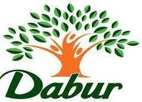

OUR SPONSERS
Time to time donation camps are organised to help the poor and the needy. At these donation camps clothes both new and old were donated to the children and women. A girl, whose father was working with the NGO, and died at very early age, is supported by Anandashram Socio-Cultural Organization. Her family, study and many other things are included.
